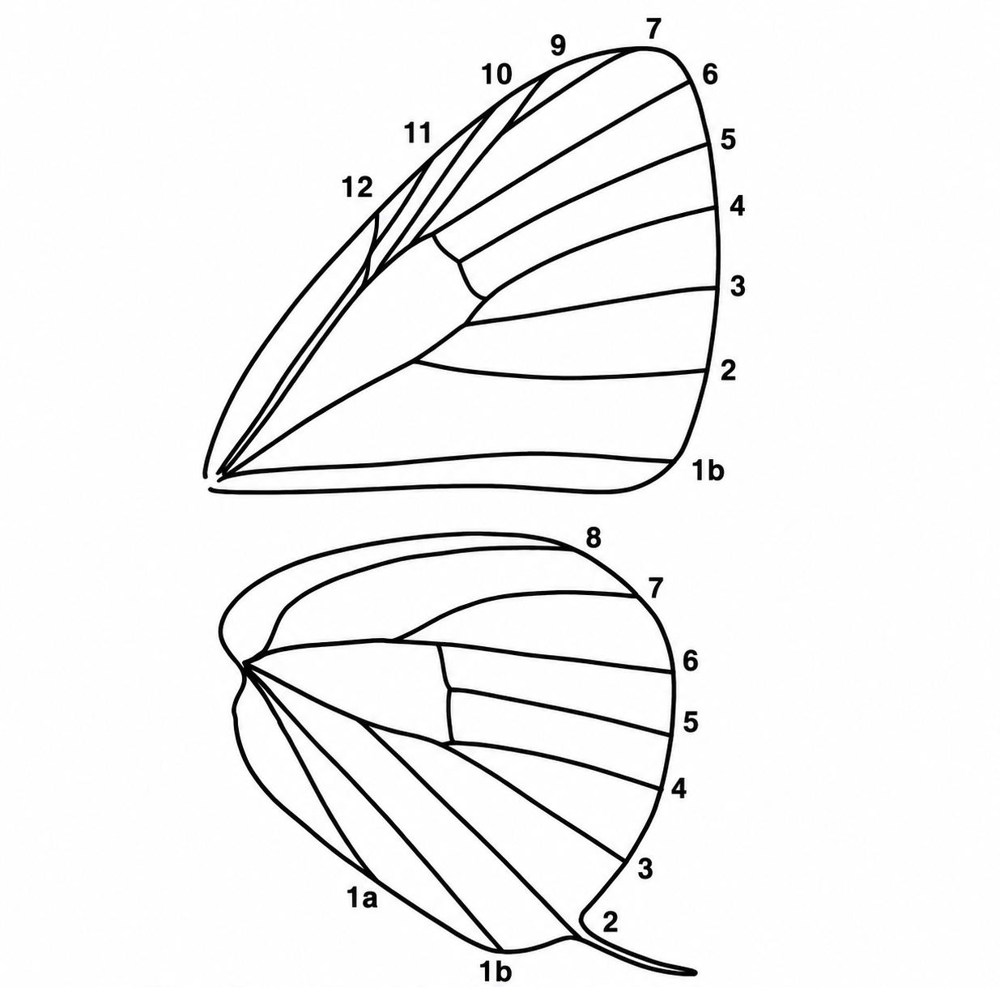

Where to start
Open Feature Scoring with your photo. Mark only the features you can clearly see — candidates are ranked in real time. Leave anything unclear blank; unanswered questions do not penalise any candidate.
Know these five terms before you score
Photo tip: the forewing base is usually hidden under the hindwing in resting shots — skip any feature that isn't clearly visible. A sharp underside photo with the hindwing fully in view is enough to score most questions.
Open Feature Scoring →Reference diagrams for wing space numbering, morphological features, and structural landmarks used in the scoring questions.
Wing spaces (venation)
Each area between two adjacent veins on the wing is called a space (also written as "cell" in some literature). Spaces are numbered from the inner margin outward. The key questions refer to spots and markings by their space number — for example, "postdiscal spot in space 6" means the spot in the sixth space of the hindwing.

Forewing (upper): spaces 1b, 2–7, 9–12 — space 8 is absent, so numbering jumps from 7 to 9 near the apex.
Hindwing (lower): spaces 1a, 1b along the dorsum; spaces 2–8 extending to the costa. Space 2 bears the tail in tailed species.
Forewing postdiscal spots (spaces 4–10)
The forewing postdiscal spots sit in the spaces between the veins, numbered from the inner margin outward. Space 8 is absent in Nacaduba — the numbering jumps from 7 to 9. The annotated photo below (top) shows veins drawn in yellow and spots labelled in green; the unannotated original is shown below for comparison.

Yellow lines trace the forewing veins; green labels identify spots in spaces 4, 5, 6, 9 and 10. Space 7 is marked with the note "no space 8 for Nacaduba" — in this genus vein 8 is absent and the costal spaces jump from 7 directly to 9. The lower panel shows the same photo without annotations for reference.
Central spot in FW space 11
Spaces 10, 11, and 12 are narrow costal spaces near the forewing apex, between the veins and the costa. A central spot in space 11 is a diagnostic character used in several group separations — it uniquely identifies A. anarte within the camdeo group, separates the alitaeus group from other tailed species, and is checked in the agesias group. The annotated photo below shows the three spaces with the diagnostic spot in space 11 labelled.

Yellow lines trace the veins bounding spaces 10, 11, and 12 near the forewing costa. The green label marks the central spot in space 11 — its presence or absence is used as a key character in several group separations.
Spot at the base of FW space 10
A small, isolated spot can sit right at the extreme base of forewing space 10 — just above vein 10, near the cell-end — distinct from the regular postdiscal row further out. Its presence or absence separates members of the alitaeus group (e.g. present in A. pseudomuta, A. sintanga, A. alitaeus, A. denta; absent in A. elopura, A. arianaga, A. ariana, A. aida, A. havilandi) and is also a feature of the anthelus group.

Yellow lines trace the veins bounding space 10; the green arrow marks the small, isolated spot sitting right at its extreme base, near the cell-end — separate from the main postdiscal row of spots further toward the termen.
Postdiscal spot 6 & end-cell bar (A. atosia)
The end-cell bar is a bar-shaped marking at the end of the discal cell — more basally placed than the postdiscal row. In the epimuta group (A. atosia, A. lurida, A. epimuta), postdiscal spot 6 is pulled inward from the postdiscal row and sits roughly midway between spot 5 and the end-cell bar. In other Nacaduba, spot 6 remains in the postdiscal band at roughly the same level as spot 5.

Spot 6 sits roughly midway between spot 5 (red mark) and the end-cell bar (yellow rectangle) — pulled inward from the postdiscal row rather than remaining level with spot 5. The centres of spots 5, 6 and 7 stay broadly in line (an "echelon" arrangement). This inward displacement of spot 6 is the defining underside character of the epimuta group and the basis of the Q81 question in the key.
HW postdiscal spot 6 position — spots 5, 6 and 7
The radial position of postdiscal spot 6 relative to spot 5 and the end-cell bar is one of the most frequently used characters in this key. Three broad categories are distinguished:
- Not displaced — spot 6 sits in the postdiscal row, roughly level with spot 5; spots 5, 6 and 7 are broadly in line. This is the condition in most tailed Nacaduba.
- Midway — spot 6 is pulled inward from the postdiscal row and sits roughly equidistant between spot 5 and the end-cell bar. Diagnostic of the epimuta and agesilaus groups.
- Widely out of line / touching bar — spot 6 is displaced so far inward that its inner edge is in line with, or inside, the inner edge of spot 7, and it typically touches or overlaps the end-cell bar. Spots 5, 6 and 7 are widely out of line. Seen in the aurea, agrata, eumolphus, and related groups.
The photo below (Nacaduba aurea) illustrates these features with annotations.

Green arrows identify spot 7, spot 6, spot 5, and the end-cell bar. Spot 6 is displaced so far inward that its inner edge is in line with the inner edge of spot 7 — it touches or overlaps the end-cell bar, and the three spots are widely out of line with each other.
HW tail, postdiscal spots 5–7, FW vein 4 & spaces 10–11 (A. achelous)
This annotated field photo shows several landmarks used across multiple key questions in a single view. The hindwing postdiscal spots 5, 6 and 7 sit in a row visible in almost any perched photograph; their relative alignment — especially spot 6 — is central to several early questions. FW vein 4 is where the postdiscal band is dislocated in the anthelus group, and spaces 10 and 11 above it are checked for spot presence and count.

Yellow lines trace the major veins. Green labels mark: FW spaces 10 and 11 (above vein 4 toward the apex); FW vein 4 (where the postdiscal band may be dislocated in the anthelus group); HW postdiscal spots 7, 6 and 5 (inner to outer); and the tail emerging at HW vein 2. In this anthelus-group specimen, spots 5, 6 and 7 are broadly aligned in the postdiscal row — spot 6 is not displaced toward the discal cell.
FW postdiscal band partially dislocated at vein 4
In the cleander group, the forewing postdiscal band is interrupted at vein 4 — the spot in space 4 is shifted relative to the spots either side of it. Nacaduba silhetensis shows a partial dislocation: there is a visible step or kink at vein 4, but the band is not completely broken. This contrasts with a fully straight band (not dislocated) seen in the violet-male subgroup of the cleander group.

The yellow line points to the kink in the forewing postdiscal band at vein 4. In A. silhetensis the dislocation is partial — the band deviates at vein 4 but is not completely broken or gapped as in the anthelus group.
FW postdiscal spot 4 shifted distad — out of line with spots 5 and 6
In the alitaeus group (e.g. Nacaduba elopura, A. aida, A. ariana) and several other groups, the forewing postdiscal spot in space 4 is shifted distad (outward), placing it clearly out of line with the spots in spaces 5 and 6. This is a different character from the partial dislocation at vein 4 seen in the cleander group: there the band keeps a continuous course with only a step or kink, whereas here spot 4 is displaced outward as a whole, breaking the line formed by spots 5 and 6.

The arrow points to the postdiscal spot in space 4: it sits noticeably further out (toward the termen) than the spots in spaces 5 and 6, breaking the line they form — not merely a partial dislocation as seen at vein 4 in the cleander group.
Basal spot in HW space 6 — A. hypomuta vs amphimuta group
In the hypomuta group, most Malayan individuals have a small spot at the extreme base of hindwing space 6 on the underside — closer to the wing base than the normal postdiscal row. This spot is absent in the similar amphimuta group and is usually also absent in Bornean and Sumatran A. hypomuta. The yellow outline marks HW space 6; the green arrow points to the basal spot.

The yellow line labels HW space 6. Green arrows identify spot 6, spot 7, the small diagnostic spot at the base of HW space 6, and the end-cell bar. The basal spot sits well inside the postdiscal row — its presence (in Malayan specimens) is the key character separating A. hypomuta from the amphimuta group, which otherwise looks very similar.
HW central cell spot shape — A. ace vs A. atosia
The hindwing discal cell underside usually carries a small, separate, more-or-less round central spot. In a few species this spot is enlarged into a band spanning the entire width of the cell — an immediately diagnostic difference from the ordinary rounded spot seen in most Nacaduba, including the otherwise similar epimuta group.

In Nacaduba ace (top — ace subgroup of the agrata group) the central cell spot is band-like, stretching entirely across the cell — the defining character of the subgroup. In Nacaduba atosia (bottom — epimuta group) the central cell spot is normal and rounded, as in most other Nacaduba. This shape is the first character checked when separating the ace subgroup from the rest of the tailed agrata-group candidates.